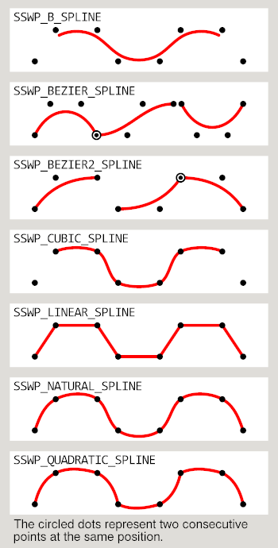
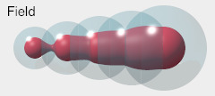
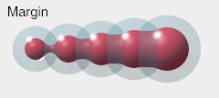
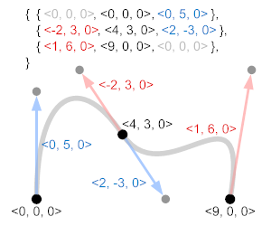

SphereSweep 2.1A User Manual
Abstract
SphereSweep is a library module from the
Persistence of Vision Raytracer (POV-Ray)
Object Collection.
POV-Ray’s sphere_sweep primitive is a useful object, but it is sometimes prone to artifacts and unreliable automatic bounding. This module provides a variety of alternatives that approximate sphere sweeps using blobs or linear segments. In addition, shapes can be based on Bézier, natural, or quadratic splines, which are not available for the sphere_sweep primitive.
The control points and radii are specified in arrays.
Also included in this module are an alternate interface to the actual sphere_sweep primitive, macros for copying subarrays and for creating control points for smooth Bézier curves, and a function for controlling blob sizes.
Version 2.0 added data conversion to and from Blue Herring’s PointArrays module, and a more robust Bézier algorithm. New in version 2.1/2.1A is the quadratic Bézier spline type.
Table of Contents
Overview
Downloaded Files
| Key Files |
| File |
Description |
spheresweep.html |
The user manual (this document) |
spheresweep.inc |
The SphereSweep library |
spheresweep_bezier.png |
Illustrations for the user manual |
spheresweep_blob_field.jpg |
spheresweep_blob_margin.jpg |
spheresweep_splines.png |
spheresweep_cockpit.pov |
Demonstration scene description files |
spheresweep_infinity.pov |
spheresweep_infinity_pa.pov |
spheresweep_lanes.pov |
spheresweep.jpg |
Sample output images |
spheresweep_thumbnail.jpg |
spheresweep_wings.png |
An image used by one of the demo scenes |
| Administrative Files |
| File |
Description |
READMEnnnnnn.html |
Important information about using the POV-Ray Object Collection |
spheresweep_description.txt |
A brief description of SphereSweep |
spheresweep_keywords.txt |
A list of keywords |
spheresweep_prereqs.txt |
Prerequisites |
spheresweep.css |
Other administrative files |
cc-LGPL-a.png |
Versionnnnnnn.js |
| Other Files |
| File |
Description |
spheresweep_icon_diff.png |
Icons for the user manual |
spheresweep_icon_opaque.png |
spheresweep_icon_transp.png |
The italicized nnnnnn in some of the file names represents the 6-digit number that is in the name of the .zip file. If you downloaded this module from a repository other than lib.povray.org, the files cc-LGPL-a.png, READMEnnnnnn.html, and Versionnnnnnn.js may not be present. Please see the Object Collection User’s Guide if the README file is not present.
Table of contents
User Manual Conventions
Capitalization and spacing are significant in this user manual:
- SphereSweep (mixed case with no spaces)
- Refers to this Object Collection module.
sphere_sweep (all lowercase, monospace font with an underscore)
- Refers to POV-Ray’s built-in
sphere_sweep primitive.
- sphere sweep (two separate words, all lowercase except for sentence capitalization)
- Refers to the general concept of sphere sweeps.
Identifiers and file names are presented as-is, using monospace font.
Prerequisites
- SphereSweep requires POV-Ray version 3.5 or later.
- One of the demo scenes,
spheresweep_infinity_pa.pov, requires the PointArrays module and POV-Ray 3.6.1 or later. PointArrays is not required for general use of SphereSweep.
Namespace Compliance
All file names in this module and all global and local identifiers defined in spheresweep.inc comply fully with the Object Collection naming standards, as revised August 2008 and proposed August 2012. The files in this module may be safely stored in the same folder as other fully compliant Object Collection modules.
The reserved prefixes for this module are “spheresweep” and “sswp,” including any uppercase and lowercase variants. To avoid conflicts, do not introduce into your scene description file any identifiers with either of these prefixes as names, or any identifiers that start with either of these prefixes plus an underscore.
The standard include file shapes.inc is used by spheresweep.inc. The identifier View_POV_Include_Stack from the standard include file debug.inc is referenced by spheresweep.inc, although debug.inc itself is not used.
Usage
Include this file once prior to using any of the macros:
#include "spheresweep.inc"
Including the file more than once is harmless, though unnecessary.
POV-Ray may issue a warning that the experimental feature spline is used. This is normal and expected.
Table of contents
Object Macros
Macro Arguments
Array of Spline Control Points
The POV-Ray Spline Workshop has an introduction to spline control points. Although the Workshop only covers 2-D splines, the concepts extend to 3-D space. (There is one difference between the Workshop and the SphereSweep module: SphereSweep does not require an extra point preceding a quadratic spline. This is because this module uses POV-Ray’s experimental spline feature, which does not require the extra point.) The Workshop does not cover B-splines or natural splines, but these are illustrated and briefly described below.
The elements of the array of control points (the pv_Points argument) are converted internally to 3-D vectors by the macros. An array of 2-D vectors can therefore be used to define an object whose control points are all in the x-y plane.
Note: The 3-D vector promotion is intended to be internal only. If you find that your array has been altered, please report this to povray.object-collection; it is not intentional.
Array of Sphere Radii
Each value in the array of radii (the Radii argument) corresponds to a spline control point. If this array is shorter than the array of spline control points (pv_Points), the last radius will be used for the remainder of the sphere sweep or approximation thereof. This means that you can use an array of one element for a sphere sweep of constant radius. If the Radii array is longer than the array of spline control points, the extra radii are ignored.
Spline Types

These values may be used as the Type argument:
SSWP_B_SPLINE
- A cubic (3rd degree) B-spline. Each part of the curve is influenced by 4 contiguous control points, but the curve typically does not pass through any of the control points.
SSWP_BEZIER_SPLINE
- A cubic (3rd degree) Bézier spline. This curve comprises a series of curved segments, each of which is defined by exactly 4 control points. Each curve segment starts and ends at its 1st and 4th control points, respectively, but typically does not pass through the 2nd and 3rd control points. If you are familiar with SVG, this is equivalent to the cubic ‘
C’ path.
SSWP_BEZIER2_SPLINE
- A quadratic (2nd degree) Bézier spline. This curve comprises a series of parabolic segments, each of which is defined by exactly 3 control points. Each curve segment starts and ends at its 1st and 3rd control points, respectively, but typically does not pass through the 2nd control point. If you are familiar with SVG, this is equivalent to the quadratic ‘
Q’ path.
SSWP_CUBIC_SPLINE
- All points except the first and last are connected with cubic curves.
SSWP_LINEAR_SPLINE
- All points are connected with straight line segments.
SSWP_NATURAL_SPLINE
- All points are connected with cubic curves.
SSWP_QUADRATIC_SPLINE
- All points are connected with parabolic curves.
Macro SphereSweep_Native() can use only the following spline types:
SSWP_B_SPLINE
SSWP_CUBIC_SPLINE
SSWP_LINEAR_SPLINE
The other object macros can use any of the spline types.
Table of contents
SphereSweep_Approx (Type, pv_Points, Radii, Res, Tolerance)
A sphere_sweep object (or union of sphere_sweep objects, in the case of disjointed Bézier objects) that uses a linear spline to approximate a sphere sweep of another spline type. Note that for opaque objects that are not in a CSG difference or intersection, SphereSweep_Union() renders much faster with the same results (although with a higher object count).
Note: When using one of the Bézier spline types, if the first sphere of a Bézier segment has a different radius than the last sphere of the previous segment, the segments will be treated as disjoint, even if the respective control points have the same value.
Arguments
| Formal Parameter | Type | Description |
|---|
Type |
float |
The spline type |
pv_Points |
array of point vectors |
The spline control points |
Radii |
array of floats |
The sphere radii corresponding to the spline control points |
Res |
float |
The number of segments between each pair of adjacent spline control points |
Tolerance |
float |
The depth tolerance, as described in the sphere_sweep documentation. For the default tolerance, use 0 (zero). |
Table of contents
SphereSweep_Blob_field (Type, pv_Points, Radii, Res, Field, Use_Sturm)
An approximation of a sphere sweep using a blob of spheres, with a blob field that varies in proportion to the sphere sweep radii.
Arguments
| Formal Parameter | Type | Description |
|---|
Type |
float |
The spline type |
pv_Points |
array of point vectors |
The spline control points |
Radii |
array of floats |
The sphere radii corresponding to the spline control points |
Res |
float |
The number of sphere components between each pair of adjacent spline control points |
Field |
float |
The blob field radius, in relation to the sphere radii.

For example, a value of 2 results in a field radius twice the size of each sphere radius.
|
Use_Sturm |
float/Boolean |
Whether or not to use the slower, but more accurate Sturmian root solver. |
Table of contents
SphereSweep_Blob_margin (Type, pv_Points, Radii, Res, Margin, Use_Sturm)
An approximation of a sphere sweep using a blob of spheres, with a constant blob field margin.
Arguments
| Formal Parameter | Type | Description |
|---|
Type |
float |
The spline type |
pv_Points |
array of point vectors |
The spline control points |
Radii |
array of floats |
The sphere radii corresponding to the spline control points |
Res |
float |
The number of sphere components between each pair of adjacent spline control points |
Margin |
float |
The blob field beyond the sphere radius.

For example, if Margin is 0.5 and a sphere’s radius is 2.0, then the field radius will be 2.5.
|
Use_Sturm |
float/Boolean |
Whether or not to use the slower, but more accurate Sturmian root solver. |
Table of contents
SphereSweep_CSG (Type, pv_Points, Radii, Res, Use_merge)
An approximation of a sphere sweep using a CSG merge or union of linear segments. Note that for transparent objects, or opaque objects in a CSG intersection or difference, SphereSweep_Approx() renders faster with the same results, though perhaps more prone to tracing artifacts.
Arguments
| Formal Parameter | Type | Description |
|---|
Type |
float |
The spline type |
pv_Points |
array of point vectors |
The spline control points |
Radii |
array of floats |
The sphere radii corresponding to the spline control points |
Res |
float |
The number of segments between each pair of adjacent spline control points |
Use_merge |
float/Boolean |
Whether or not to use a CSG merge. In general, pass yes if the object is to be transparent, no otherwise. |
Table of contents
SphereSweep_Merge (Type, pv_Points, Radii, Res)
An approximation of a sphere sweep using a CSG merge of linear segments. Although this macro is intended for transparent objects, SphereSweep_Approx() renders these faster with the same results, though perhaps more prone to tracing artifacts.
Arguments
| Formal Parameter | Type | Description |
|---|
Type |
float |
The spline type |
pv_Points |
array of point vectors |
The spline control points |
Radii |
array of floats |
The sphere radii corresponding to the spline control points |
Res |
float |
The number of segments between each pair of adjacent spline control points |
Table of contents
SphereSweep_Native (Type, pv_Points, Radii, Tolerance)
A wrapper for the regular, bona fide sphere_sweep primitive. If you’re not having any problems with bounding or artifacts, but do have an array of points and an array of sphere radii, you can use this macro to create a sphere_sweep object from those arrays.
Arguments
| Formal Parameter | Type | Description |
|---|
Type |
float |
The spline type. Only those spline types supported natively by POV-Ray’s sphere_sweep primitive can be used, namely SSWP_B_SPLINE, SSWP_CUBIC_SPLINE, and SSWP_LINEAR_SPLINE. |
pv_Points |
array of point vectors |
The spline control points |
Radii |
array of floats |
The sphere radii corresponding to the spline control points |
Tolerance |
float |
The depth tolerance, as described in the sphere_sweep documentation. For the default tolerance, use 0 (zero). |
Table of contents
SphereSweep_Union (Type, pv_Points, Radii, Res)
An approximation of a sphere sweep using a CSG union of linear segments. In general, use this for opaque objects. Note that in a CSG intersection or difference, SphereSweep_Approx() renders faster with the same results.
Arguments
| Formal Parameter | Type | Description |
|---|
Type |
float |
The spline type |
pv_Points |
array of point vectors |
The spline control points |
Radii |
array of floats |
The sphere radii corresponding to the spline control points |
Res |
float |
The number of segments between each pair of adjacent spline control points |
Table of contents
Utility Macros and Function
Macro SSwp_Bezier (v_Ctrls, s_File, VDim, Places)
As a convenience for facilitating smooth continuity between cubic Bézier spline segments, this macro accepts a set of points and vectors, and converts them to an array of Bézier control points. The returned array may be passed directly to a SphereSweep object macro using spline type SSWP_BEZIER_SPLINE; or its elements may be used to construct a Bézier lathe or prism object. Optionally, the points may be written to a file.

The set of points and vectors is an n×3 array, where n is the number of distinct points through which the spline passes.
For this array, the last point of a Bézier segment and the first point of the next segment are considered to be the same point. Each element [][1] is a point through which the spline passes. Elements [][0] and [][2] are vectors pointing to the previous and next intermediate control points, respectively, in the spline. The spline does not typically pass through the intermediate control points. By making these vectors collinear, while pointing in opposite directions, smooth transitions may be maintained between spline segments.
Elements [0][0] and [n − 1][2] are ignored.
The illustration shows an example of how this array translates to the final set of control points.
The demo scene spheresweep_cockpit.pov demonstrates how to use this macro, and writes its output to the message window when rendered.
Arguments
| Formal Parameter | Type | Description |
|---|
v_Ctrls |
array[][3] of vectors |
The array of points and vectors. This argument is input only and is not altered. |
s_File |
string |
The name of a file to which to write the output array. Use "-" (hyphen) to write to the debug stream or "" (the null string) for no written output. |
VDim |
float |
The dimension size of the points to be written to the file
|
Places |
float |
The number of decimal places to be written
|
Table of contents
Macro SSwp_Convert_from_PA (paPts, Radius, sswpPts, Radii)
Converts spline control points and radii in PointArrays format to SphereSweep format.
Arguments
| Formal Parameter | Type | Description | In/Out |
paPts |
array of vectors |
The array of spline control points in PointArrays format |
Input |
Radius |
float |
The radius of the sphere sweep, or 0 if the radii are in the t components of paPts |
Input |
sswpPts |
array of 3-D point vectors |
The converted spline control points, which can then be passed to SphereSweep macros |
Output |
Radii |
array of floats |
The converted radii, which can then be passed to SphereSweep macros |
Output |
Table of contents
Macro SSwp_Convert_to_PA (sswpPts, Radii, paPts, Radius)
Converts spline control points and radii from SphereSweep format to PointArrays format.
Arguments
| Formal Parameter | Type | Description | In/Out |
sswpPts |
array of point vectors |
The array of spline control points in SphereSweep format |
Input |
Radii |
array of floats |
The array of radii in SphereSweep format |
Input |
paPts |
array of 3-D or 4-D vectors |
The converted points, which can then be passed to PointArrays macros |
Output |
Radius |
float |
A converted radius, which can then be passed to PointArrays macros |
Output |
Table of contents
Function SSwp_fn_Blob_strength (RSurface, RField)
Returns the field strength that yields a blob component of the desired surface radius. The default blob threshold of 1.0 is assumed.
This function is used internally by macros SphereSweep_Blob_field() and SphereSweep_Blob_margin(), but is too useful not to document. More blob-related functions are available from the Object Collection module RoundEdge.
Arguments
Note: In order to avoid a POV-Ray namespace scope feature, the function arguments in spheresweep.inc begin with “sswp_P” followed by a digit and an underscore. In this user manual, this prefix is omitted for clarity.
| Formal Parameter | Type | Description |
|---|
RSurface |
float |
The desired surface radius of the blob component |
RField |
float |
The field radius of the component |
Table of contents
Macro SSwp_Subarray (Array, Start, End)
Returns a one-dimensional array that is a copy of a subrange of another one-dimensional array.
Arguments
| Formal Parameter | Type | Description |
|---|
Array |
array |
The array to be copied |
Start |
float |
The index of the first element to be copied |
End |
float |
The index of the last element to be copied |
- If
Start or End is out of range, they will be clipped to the size of the array, and a warning will be issued.
- If
End is less than Start, a warning will be issued, and the contents of the returned array will be undefined. Accessing it will probably cause a fatal parse error.
Table of contents
Other Identifiers
Reference Identifier
| Identifier | Type | Description | Value |
|---|
SPHERESWEEP_VERSION |
float |
The SphereSweep version, in case the scene file needs that information. |
2.1 |
Internal Identifiers
Any identifiers in spheresweep.inc that are not documented in this manual are considered “private” or “protected,” and are subject to change or elimination in a future update.
Table of contents
Observations
Artifacts
- In POV-Ray 3.6,
sphere_sweep objects based on B-splines or cubic splines, or even complex linear splines, are prone to artifacts.
 In POV-Ray 3.7, opaque
In POV-Ray 3.7, opaque sphere_sweep objects based on B-splines or cubic splines may show artifacts when used in a CSG intersection or difference.
- In POV-Ray 3.7, transparent
sphere_sweep objects based on B-splines or cubic splines may show discs at the end caps.
- Automatic bounding is unreliable for cubic splines. In POV-Ray 3.6, this leads to unnecessarily slow renders. In POV-Ray 3.7, this may cause inappropriate clipping, and possibly artifacts when a
sphere_sweep object is differenced from another object. Manual bounding would seem the obvious fix, but there are undocumented circumstances in which manual bounds are lost.
For B-splines and cubic splines, the following alternatives are free of tracing artifacts (although banding artifacts may appear if the value of Res is too low).
- In POV-Ray 3.6:
-
SphereSweep_Union() for opaque objects
-
SphereSweep_Union() for opaque objects in a CSG intersection or difference
-
SphereSweep_Merge() for transparent objects
- In POV-Ray 3.7:
-
SphereSweep_Union() for opaque objects
-
SphereSweep_Approx() for opaque objects in a CSG intersection or difference
-
SphereSweep_Approx() for transparent objects
Some of these problems are being addressed in POV-Ray 3.8, but as of the release of SphereSweep 2.1A, POV-Ray 3.8 is not yet finalized.
Render Speeds
These observations are not hard and fast rules. All timing tests were done using POV-Ray 3.7.
- An opaque linear
SphereSweep_Union() (with Res = 1) is faster than the equivalent opaque sphere_sweep { linear_spline }, unless a CSG intersection or difference is performed.
- On the other hand, a transparent
sphere_sweep { linear_spline } is faster than the equivalent transparent linear SphereSweep_Merge().
- An opaque cubic or B-spline
SphereSweep_Approx(), with a reasonable value for Res, is slower than the equivalent straightforward sphere_sweep, and less accurate. (The original version of this documentation said that SphereSweep_Approx() is slightly faster, but my old records and new tests both show otherwise.) Sufficiently low values for Res will yield faster renders than the straightforward sphere_sweep, at the risk of revealing the individual segments.
- An opaque cubic or B-spline
SphereSweep_Union() is much faster than the equivalent straightforward sphere_sweep or SphereSweep_Approx(), though less accurate than the straightforward sphere_sweep.
- Notwithstanding the above, a CSG intersection or difference can greatly slow an opaque
SphereSweep_Union(). SphereSweep_Approx() should be used in these cases.
- A transparent cubic or B-spline
SphereSweep_Approx() is faster than the equivalent straightforward sphere_sweep, though less accurate.
- A transparent
SphereSweep_Merge(), and the equivalent SphereSweep_CSG() with Use_merge = yes, appear to be slower in most or all cases than the alternatives, and are never more accurate. They may be less prone to artifacts, however; the demo scene spheresweep_lanes.pov illustrates one such scenario. Another rationale for using SphereSweep_Merge() is that the CSG merge operation is not recommended with the sphere_sweep primitive; however, I have not witnessed the problem described in the POV-Ray documentation.
- There is one crucial difference between a transparent
SphereSweep_Merge() and a transparent SphereSweep_Approx(): when using a Bézier spline with disjointed segments, and one disjointed segment intersects another, SphereSweep_Approx() will render the internal surfaces. If you wish to take advantage of SphereSweep_Approx()’s shorter rendering times in such a scenario, you will need to use a merge of separate SphereSweep_Approx() objects.
Table of contents
About SphereSweep
Copyright © 2013 – 2021 Richard Callwood III. Some rights reserved.
This library is free software; you can redistribute it and/or modify it under the terms of the GNU Lesser General Public License version 2.1 as published by the Free Software Foundation.
This library is distributed in the hope that it will be useful, but WITHOUT ANY WARRANTY; without even the implied warranty of MERCHANTABILITY or FITNESS FOR A PARTICULAR PURPOSE.
Object Collection Categories
- Areas of Interest
- Contribution Types
Change Log
| Version | Date | Notes |
|---|
| 1.0 |
2013 July 22 |
|
| 1.1 |
2015 August 28 |
- Cubic B-spline capability is added for most of the object macros.
|
| 1.2 |
2015 September 11 |
- Cubic Bézier spline capability is added for most of the object macros.
|
| 2.0 |
2020 September 9 |
- An interface to the PointArrays module is added.
- The message to the debug stream stating that
spheresweep.inc is included is suppressed by default.
- Bug fix: the Bézier calculation is simplified, and now properly accommodates coinciding intermediate control points.
- Bug fix: Tolerance now works for Bézier curves in
SphereSweep_Approx().
|
| 2.1 |
2020 September 27 |
- The quadratic Bézier spline type is added.
|
| 2.1A |
2021 August 15 |
- The User Manual and license texts are updated for repositories other than lib.povray.org.
|
Table of contents
{kind=link}